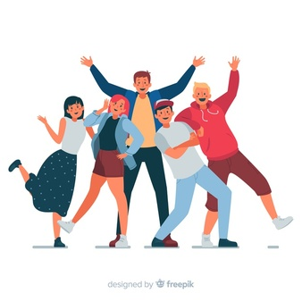

I'm Lito Satria Wiyana
Seorang Mahasiswa Sistem Informasi

Hai, aku Lito
Perkenalkan namaku Lito Satria Wiyana biasa dipanggil Lito, aku seorang mahasiswa di Universitas Brawijaya jurusan Sistem Informasi. Aku hobi bermain game dan suka berpergian menggunakan motor atau touring, juga hobi berenang bila ada waktu kosong.Profil Diri Lito
 |
Riwayat Pendidikan SD - UniversitasSaya dulu dari SDK Sang Timur, yaitu SD swasta di kota Pasuruan, Lalu berlanjut naik ke SMP 9 Pasuruan, SMP negeri di kota Pasuruan, Dan setelah lulus, aku kembali lagi ke sekolah swasta di SMAK Mgr. Soegijapranata. Setelah lulus aku masuk ke Universitas ternama Universitas Brawijaya |
|---|
Pengalaman OrganisasiSaat di SMP saya pernah mengikuti kegiatan organisasi yaitu osis, namun setelah beranjak SMA tidak mengikuti organisasi apapun dan berfokus dalam pelajaran saja. Namun saat aku masuk ke Universitas aku mengikuti organisasi olahraga. |
 |
|---|
Kompetensi Keahlian Bidang ITSaya pribadi tidak mempunyai Keahlian di bidang IT, karena itu saya sangat tertarik ingin belajar lebih sesuatu hal tentang teknologi dan sejenisnya. |
|---|